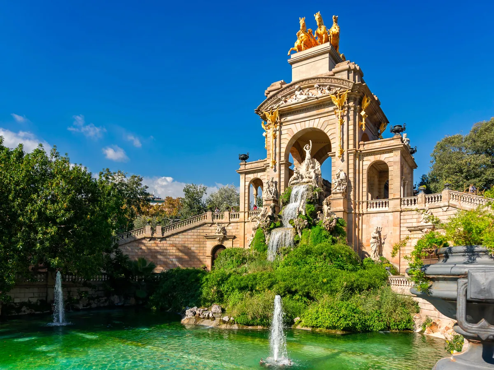
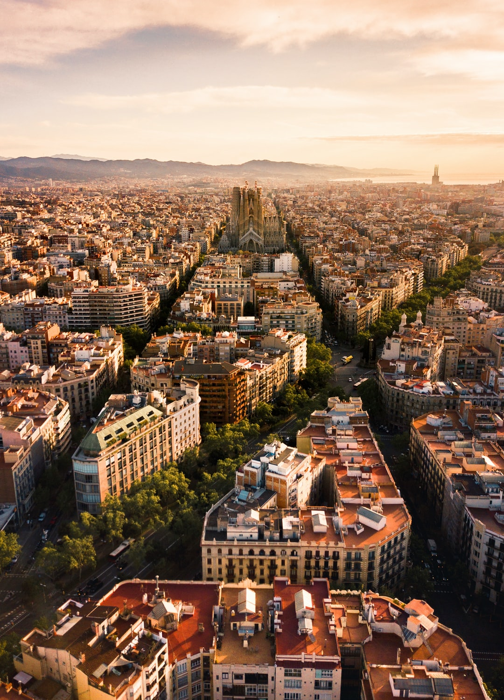
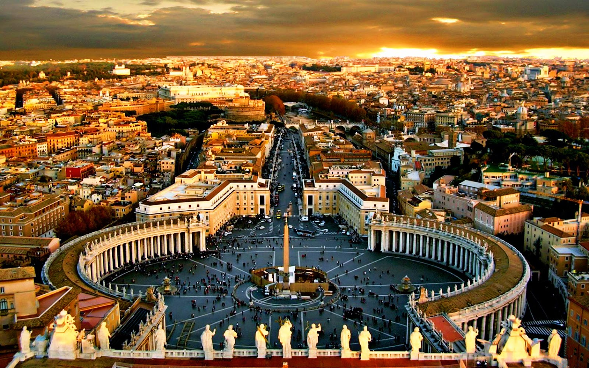

This Spanish city is a feast for the eyes: Visitors can walk past medieval architecture in the Barri Gòtic, snap photos of the intricate Basilica de la Sagrada Família and marvel at Antoni Gaudí's whimsical creations in Park Güell. La Barceloneta beach and the Parc de la Ciutadella are perfect places to pass the time on a sunny day before checking out the restaurants and bars along Las Ramblas, which buzzes at all hours of the night. For travelers who want to see Barcelona from above, trek up Mount Tibidabo or to the Bunkers del Carmel.
  